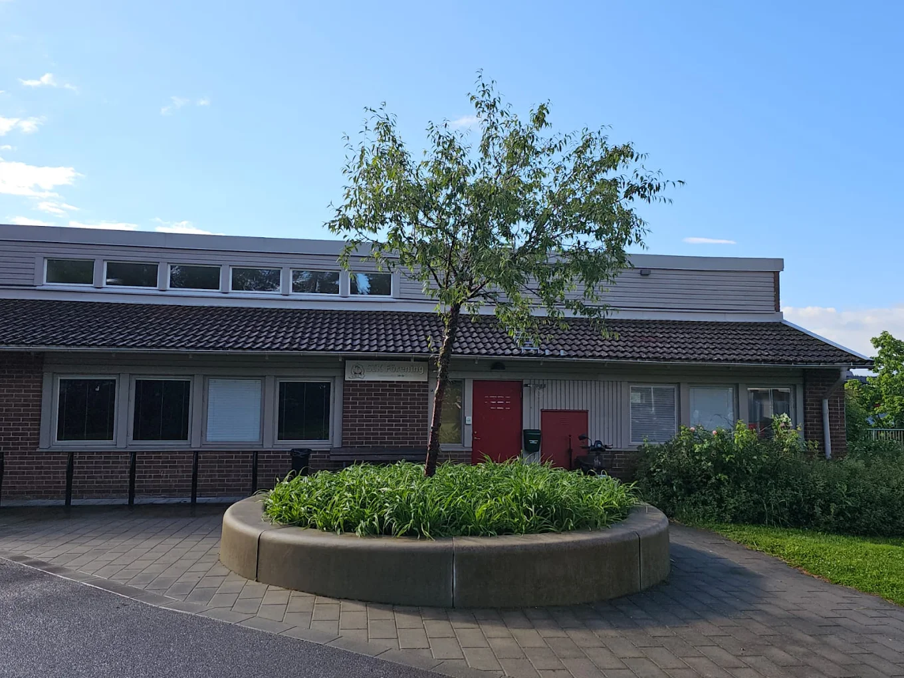

Vår mission
SIKF arbetar för att skapa en stabil och välkomnande mötesplats där människor kan be, lära sig, växa och bidra till samhället.
Föreningen samlar medlemmar kring islamisk kunskap, somaliskt språk och kulturarv, familjeaktiviteter och social gemenskap.
Dagliga böner, fredagsbön och religiös vägledning.
Quran-undervisning, föreläsningar och grundläggande islamisk kunskap.
Verksamhet för barn, ungdomar, familjer och äldre.
Bevarande av somaliskt språk, kultur och identitet.